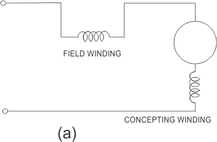
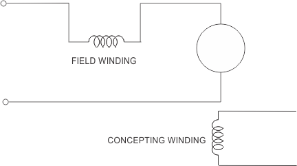
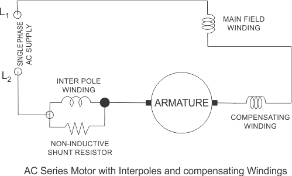

(a) An ac supply will produce a unidirectional torque because the direction of both the currents(i.e. armature current and field current) reverses at the same time.
(b) Due to presence of alternating current, eddy currents are induced in the yoke and field cores which results in excessive heating of the yoke and field cores.
(c) Due to the high inductance of the field and the armature circuit, the power factor would become very low.
(d) There is sparking at the brushes of the dc series motor.
So considering above points we can say that we don’t have good performance of dc series motor on the application of ac supply. Now in order to reduce the eddy currents there is need to laminate the yoke and field core. This is our first modification to dc series motor. What about power factor how we can improve power factor? Now the power factor is directly related to reactance of the field and armature circuit and we can reduce the field winding reactance by reducing the number of turns in the field winding. But there is one problem: on reducing the number of turns, field mmf will decrease and due to this the air gap flux decrease. The overall result of this is that there is an increase in the speed of the motor but decrease in the motor torque which is not desired. Now how to overcome from this problem? the solution to this problem is the use of compensating winding. On the basis of the usage of compensating winding we have two types of motor and they are written below:
(a) conductively compensated type of motors
(b) Inductively compensated type of motors.
Conductively Compensated Type of Motors
Given below is the circuit diagram of the conductively compensated type of motors. In this type of motor, the compensating winding is connected in series with the armature circuit.

Inductively Compensated Type of Motors
Given below is the circuit diagram of the inductively compensated type of motors. In this type of motor, the compensating winding has no interconnection with the armature circuit of the motor. In this case, a transformer action will take place as the armature winding will act as primary winding of the transformer and the compensation winding will acts as a secondary winding. The current in the compensating winding will be in phase opposition to the current in the armature winding.

Given below is the complete schematic diagram of the single phase ac series motor with all the modifications (i.e. compensating winding and inter pole).

We have already discussed the advantage of having compensating winding. Let us discuss what is the use of the inter pole? The main function of the inter poles is to improve the performance of the motor in terms of higher efficiency and a greater output from the given size of the armature core. We have taken very high reactive voltage drop of series field as compared to either armature or the compensating field in order to reduce the series filed inductance. The winding of the inter pole circuit is connected in parallel with the non inductive shunt as shown in the above figure.
 by
by